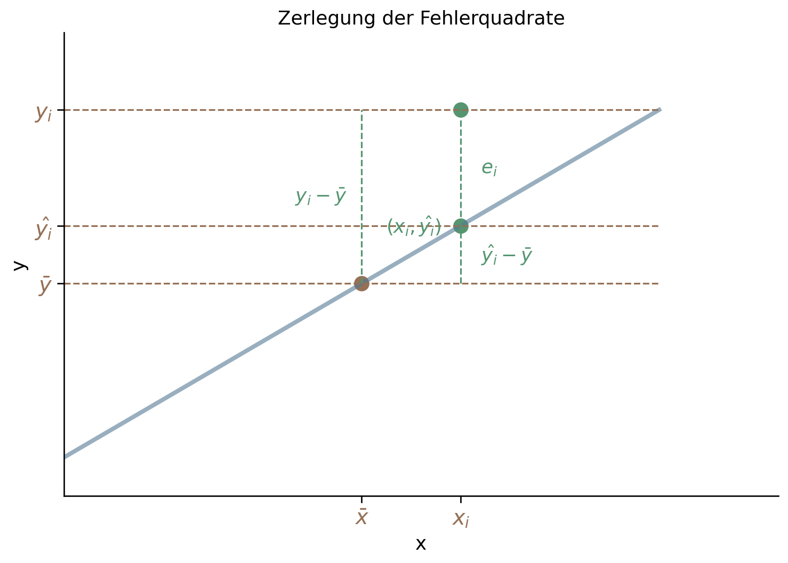
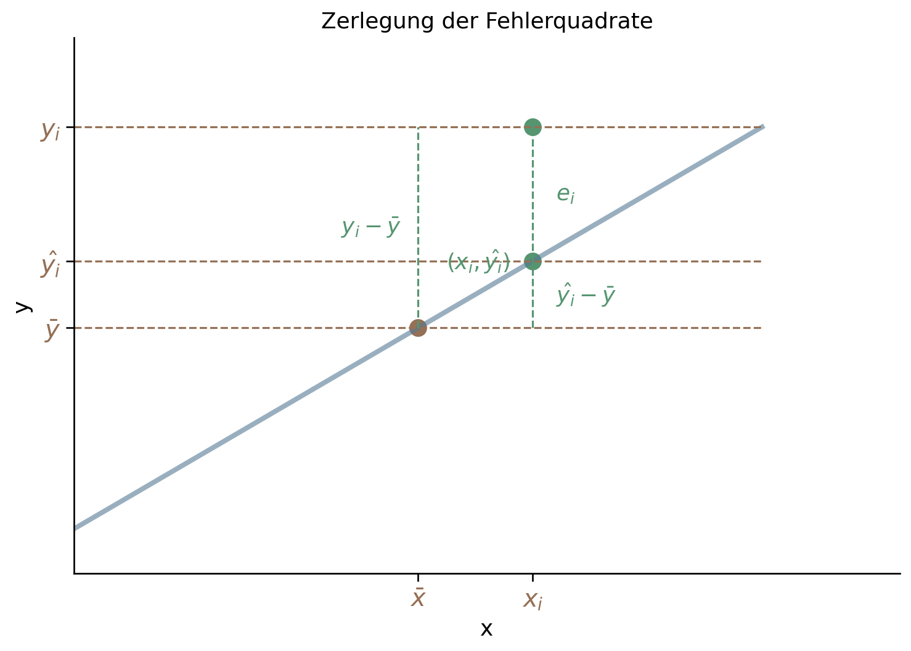
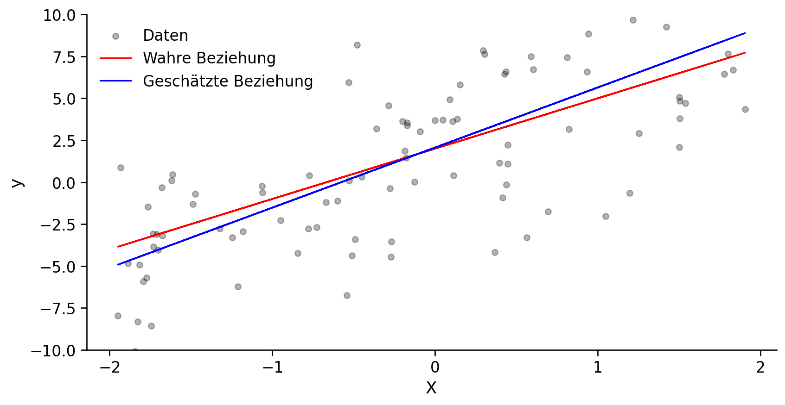
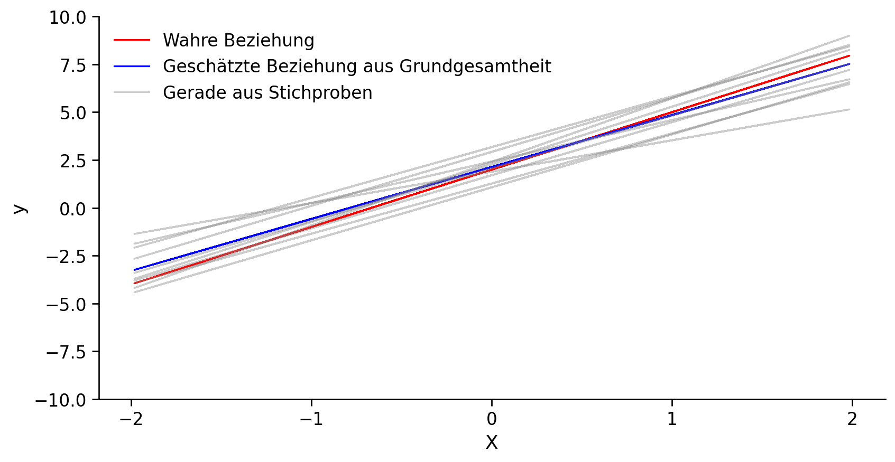

04 | Diagnostische Analyse - Part 2
Was haben wir bisher gelernt?
Was lernen wir heute?
Lineare Regression:
Beurteilung des Modells
Interpretation der Koeffizienten
Wir haben unsere Regressionsfunktion geschätzt. Wir wissen jedoch nicht, wie gut das Modell ist.
Wir haben ein Modell verwendet, um uns der Realität anzunähern, und wir müssen verstehen, wie gut unser Modell in dieser Hinsicht ist. Daher müssen wir unser Modell bewerten.
Dabei gibt es zwei Arten der Beurteilung:
Globale Beurteilung, d.h. wie gut kann \(y\) durch \(X\) erklärt werden.
Beurteilung der Koeffizienten, d.h. ob und wie die einzelnen \(x\) zur Erklärung von \(y\) beitragen.
Wir haben zwei Ansätze, um die globale Beurteilung durchzuführen:
Bestimmtheitsmaß \(R^2\)
F-Test
Wir haben gesehen, dass wir unser Regressionsmodell optimieren, indem wir Folgendes minimieren
\[ \text{RSS} = \sum_{i=1}^n e_i^2 \]
Das RSS (Residual Sum of Squares) ist ein Maß für die Abweichung zwischen den beobachteten Werten \(y_i\) und den geschätzten Werten \(\hat{y}_i\).
Problem:
Lösung:
Wir können die RSS jedoch zerlegen in

Diese Abweichung kann aufgeteilt werden in:
erklärte Abweichung: \(\hat{y}_i - \bar{y}\); wenn \(x_i\) höher als \(\bar{x}\) ist, erwarten wir, dass \(\hat{y}_i\) höher als \(\bar{y}\) ist
unerklärte Abweichung: \(\epsilon_i\); kann nicht durch das obige Argument erklärt werden
daher:
:::
Ergibt sich aus der auf der vorherigen Seite beschriebenen Beziehung und ist definiert als
\[R^2 = \frac{\text{erklärte Abweichung}}{\text{gesamte Abweichung}} = \frac{\sum_{i=1}^n (\hat{y}_i - \bar{y})^2}{\sum_{i=1}^n (y_i - \bar{y})^2}\]
Interpretation: Wie viel von der Abweichung in \(y\) kann durch das angegebene Modell erklärt werden.
1️⃣ Einfache lineare Regression
2️⃣ Multiple lineare Regression
Obwohl \(R^2\) eine gute Metrik ist, hat sie einige Nachteile, vor allem:
Um diese Nachteile auszugleichen, können wir verwenden
Berücksichtigt die Anzahl der Variablen und bereinigt sie durch
\[R^2_{adj} = R^2 - \frac{p \cdot (1 - R^2)}{n- p - 1}\]
wobei:
\(n\) = Anzahl der Beobachtungen (d.h. der Elemente im Datensatz)
\(p\) = Anzahl der Koeffizienten (d.h. Variablen im Datensatz)
\(n - p - 1\) = Anzahl der Freiheitsgrade
Vergleich von \(R^2\) und \(R^2_{adj}\) anhand unseres Werbedatensatzes
Der \(R^2\)-Wert misst, wie viel von \(y\) durch das Modell erklärt werden kann.
Da unsere Daten in den meisten Fällen auf einer Stichprobe und nicht auf einer Grundgesamtheit beruhen, müssen wir verstehen, inwieweit das Modell - basierend auf den Stichprobendaten - für die Grundgesamtheit gültig ist.
Daher müssen wir die statistische Signifikanz des Modells verstehen. Hierfür wird die \(F\)-Statistik verwendet.
Die \(F\)-Statistik umfasst
Die geschätzte Regressionsfunktion (einer Stichprobe)
\[\hat{y} = \beta_0 + \beta_1x_1 + \beta_2x_2 + \ldots + \beta_px_p + \epsilon\]
kann als eine “wahre” Funktion mit unbekannten Parametern \(\beta_0, \beta_1, \beta_2, \ldots, \beta_p\) interpretiert werden, die die kausale Beziehung der Population beschreibt.
Diese Funktion enthält einen Fehlerterm (\(\epsilon\)). Daher kann die Regressionsfunktion als ein stochastisches Modell angesehen werden.
Wenn ein kausaler Zusammenhang zwischen \(y\) und \(X\) besteht, müssen die wahren Regressionskoeffizienten abweichend von Null sein.
Zu diesem Zweck müssen zur Prüfung der Signifikanz des Regressionsmodells die folgenden Nullhypothesen getestet werden:
\[H_0 : \beta_0 = \beta_1 = \ldots = \beta_p = 0\]
Um diese Hypothese zu testen, führen wir den \(F\)-Test unter Verwendung der \(F\)-Verteilung wie folgt durch:
Berechnung des empirischen \(F\)-Wertes:
\[F_{emp} = \frac{\sum_{i=1}^n(\hat{y}_i - \bar{y})^2/p}{\sum_{i=1}^n(y_i - \hat{y}_i)^2/(n - p - 1)} = \frac{\text{erklärte Abweichung}/p}{\text{unerklärte Abweichung}/(n - p - 1)} = \frac{R^2/p}{(1 - R^2)/(n - p - 1)}\]
wobei:
\(n\) = Anzahl der Beobachtungen
\(p\) = Anzahl der Parameter (Koeffizienten)
model = smf.ols("sales ~ TV + newspaper + radio ", data=df).fit()
f_pvalue = model.f_pvalue
f_pvalue1.575227256092437e-96Schlussfolgerung:
Das Modell ist hochsignifikant (p-value von \(\approx0.00\)%), was bedeutet, dass es sehr starke Hinweise darauf gibt, dass mindestens einer der drei Koeffizienten von Null verschieden ist.
import scipy.stats as stats
# calculate empirical F-value
r2 = model.rsquared
p, n = len(df.columns)-1, len(df) # number of independent variables, number of observations
Femp = (r2/p) / ((1-r2)/(n-p-1))
# define theoretical F-distribution
df_p = p # three independent variables
df_n = n - p - 1
F = stats.f(df_p,df_n)
# calculate p-value
f_pvalue = 2*(1-F.cdf(Femp))Betrachten wir die folgende Funktion: \[Y = \beta_0 + \beta_1X + ϵ\]
Bei dieser Funktion handelt es sich um die Regressionslinie für die Grundgesamtheit.
Wir können die Regressionslinie mit Hilfe der Stichprobendaten schätzen, aber wir können nicht sicher sein, dass die Regressionslinie für die Grundgesamtheit gültig ist.

Ein simulierter Datensatz1
rote Linie stellt die wahre Beziehung dar, f(X)=2+3X, die als Regressionslinie der Grundgesamtheit bezeichnet wird
blaue Linie ist geschätzte Regressionslinie; sie ist die Schätzung der kleinsten Quadrate für f(X) basierend auf den beobachteten Daten, die in grau dargestellt sind.

Fazit:
- da wir auf Grundlage von Stichproben Modelle schätzen, wird nur eine von (theoretisch) unendlich vielen möglichen Regressionslinien geschätzt.
- wir müssen uns daher fragen, wie sehr unsere Schätzung sich ändert, wenn wir eine andere Stichprobe ziehen.
- anders formuliert: wie hoch ist die Varianz der Schätzung bzw. der Regressionskoefizienten?
Wir haben bisher “nur” die Signifikanz des gesamten Modells getestet. Wir haben jedoch nicht die einzelnen Koeffizienten getestet.
Die allgemeine Hypothese, die wir bewerten müssen, lautet:
\[H_0 : \beta_j = 0\]
Die Schritte sind die gleichen wie beim \(F\)-Test.
Wenn wir die Nullhypothese wie oben beschrieben testen, kann der emprische \(t\)-Wert mit Hilfe der folgenden Formel bestimmt werden:
\[t_\text{emp} = \frac{\beta_j - 0}{s_{\beta_j}}\]
wobei: \(s_{\beta_j}\) = der Standardfehler1 von \(\beta_j\).
Zusammenfassung der Ergebnisse via summary2() (oder summary()):
| Model: | OLS | Adj. R-squared: | 0.896 |
| Dependent Variable: | sales | AIC: | 780.3622 |
| Date: | 2023-05-02 11:56 | BIC: | 793.5555 |
| No. Observations: | 200 | Log-Likelihood: | -386.18 |
| Df Model: | 3 | F-statistic: | 570.3 |
| Df Residuals: | 196 | Prob (F-statistic): | 1.58e-96 |
| R-squared: | 0.897 | Scale: | 2.8409 |
| Coef. | Std.Err. | t | P>|t| | [0.025 | 0.975] | |
| Intercept | 2.9389 | 0.3119 | 9.4223 | 0.0000 | 2.3238 | 3.5540 |
| TV | 0.0458 | 0.0014 | 32.8086 | 0.0000 | 0.0430 | 0.0485 |
| newspaper | -0.0010 | 0.0059 | -0.1767 | 0.8599 | -0.0126 | 0.0105 |
| radio | 0.1885 | 0.0086 | 21.8935 | 0.0000 | 0.1715 | 0.2055 |
| Omnibus: | 60.414 | Durbin-Watson: | 2.084 |
| Prob(Omnibus): | 0.000 | Jarque-Bera (JB): | 151.241 |
| Skew: | -1.327 | Prob(JB): | 0.000 |
| Kurtosis: | 6.332 | Condition No.: | 454 |
Aufgabe: berechnen Sie die Modelle für die folgenden drei Fälle:
Frage:
Im aktuellen Datensatz können wir \(\beta\)-Koeffizienten direkt miteinander verglichen, da diese die gleichen Einheiten (’000 USD) haben.
Dies ermöglichte es, Aussagen zu treffen wie
“Der Einfluss von Radiowerbung auf den Umsatz ist fast \(4\)x höher als der Einfluss von Fernsehwerbung”.
Vorsicht: Wenn die Maßeinheiten sich unterscheiden, können wir die Regressionskoeffizienten nicht direkt miteinander vergleichen. Wir haben dann zwei Möglichkeiten:
- Standardisierung der Variablen/Merkmale mit Hilfe eines \(z\)-Scores
- Standardisierung der Koeffizienten (diese Option wird hier nicht behandelt)
Im Folgenden verwenden wir den Auto-Datensatz aus “Introduction to Statistical Learning1 für die folgenden Beispiele.
Datensatz: https://www.statlearning.com/s/Auto.csv
Der Datensatz beinhaltet die folgenden Informationen:
mpg = Meilen pro Gallonecylinders = Anzahl der Zylinderdisplacement = Hubraum; Näherungswert für Gesamtleitunghorsepower = PSweight = Gewicht in Pfundacceleration= Zeit in Sekunden bis 100mphyear = Jahr, in dem das Modell hergestellt wurdeorigin = Region (1=US, 2=Europa, 3=Asien)name = Name des Modells| mpg | cylinders | displacement | horsepower | weight | acceleration | year | origin | name | |
|---|---|---|---|---|---|---|---|---|---|
| 0 | 18.0 | 8 | 307.0 | 130 | 3504 | 12.0 | 70 | 1 | chevrolet chevelle malibu |
| 1 | 15.0 | 8 | 350.0 | 165 | 3693 | 11.5 | 70 | 1 | buick skylark 320 |
| 2 | 18.0 | 8 | 318.0 | 150 | 3436 | 11.0 | 70 | 1 | plymouth satellite |
| 3 | 16.0 | 8 | 304.0 | 150 | 3433 | 12.0 | 70 | 1 | amc rebel sst |
| 4 | 17.0 | 8 | 302.0 | 140 | 3449 | 10.5 | 70 | 1 | ford torino |
Wir wollen analysieren, welche der drei Faktoren den Kraftstoffverbrauch (mpg) am stärksten beeinflusst und stellen dafür folgendes Modell auf:
\[ mpg = \beta_0 + \beta_1\cdot horsepower + \beta_2 \cdot weight + \beta_3 \cdot year \]
| Model: | OLS | Adj. R-squared: | 0.861 |
| Dependent Variable: | mpg | AIC: | 2058.8939 |
| Date: | 2023-05-02 11:56 | BIC: | 2441.3518 |
| No. Observations: | 397 | Log-Likelihood: | -933.45 |
| Df Model: | 95 | F-statistic: | 26.82 |
| Df Residuals: | 301 | Prob (F-statistic): | 2.67e-104 |
| R-squared: | 0.894 | Scale: | 8.5118 |
| Coef. | Std.Err. | t | P>|t| | [0.025 | 0.975] | |
| Intercept | -18.5660 | 4.0353 | -4.6009 | 0.0000 | -26.5070 | -10.6250 |
| horsepower[T.102] | -0.6075 | 3.0030 | -0.2023 | 0.8398 | -6.5170 | 5.3020 |
| horsepower[T.103] | -3.5109 | 3.0125 | -1.1654 | 0.2448 | -9.4390 | 2.4173 |
| horsepower[T.105] | 0.8558 | 1.1073 | 0.7729 | 0.4402 | -1.3233 | 3.0350 |
| horsepower[T.107] | -1.0466 | 3.0174 | -0.3469 | 0.7289 | -6.9845 | 4.8912 |
| horsepower[T.108] | -2.7938 | 3.0050 | -0.9297 | 0.3533 | -8.7073 | 3.1197 |
| horsepower[T.110] | -0.5811 | 0.9940 | -0.5846 | 0.5592 | -2.5371 | 1.3749 |
| horsepower[T.112] | -2.1576 | 1.8326 | -1.1774 | 0.2400 | -5.7639 | 1.4487 |
| horsepower[T.113] | 4.8868 | 3.0347 | 1.6103 | 0.1084 | -1.0850 | 10.8587 |
| horsepower[T.115] | 0.7738 | 1.5068 | 0.5136 | 0.6079 | -2.1913 | 3.7389 |
| horsepower[T.116] | -0.2502 | 3.0256 | -0.0827 | 0.9341 | -6.2042 | 5.7038 |
| horsepower[T.120] | -1.2739 | 1.6363 | -0.7785 | 0.4369 | -4.4940 | 1.9462 |
| horsepower[T.122] | -0.2402 | 3.0065 | -0.0799 | 0.9364 | -6.1566 | 5.6761 |
| horsepower[T.125] | -0.6968 | 1.8452 | -0.3776 | 0.7060 | -4.3280 | 2.9345 |
| horsepower[T.129] | -4.4450 | 2.1877 | -2.0318 | 0.0430 | -8.7500 | -0.1399 |
| horsepower[T.130] | -0.3612 | 1.5256 | -0.2368 | 0.8130 | -3.3634 | 2.6409 |
| horsepower[T.132] | 7.8426 | 3.0195 | 2.5973 | 0.0099 | 1.9006 | 13.7846 |
| horsepower[T.133] | -4.4834 | 3.0087 | -1.4901 | 0.1372 | -10.4042 | 1.4374 |
| horsepower[T.135] | -0.9576 | 3.0232 | -0.3168 | 0.7517 | -6.9069 | 4.9917 |
| horsepower[T.137] | 0.4192 | 3.0330 | 0.1382 | 0.8902 | -5.5495 | 6.3878 |
| horsepower[T.138] | -1.9836 | 3.0288 | -0.6549 | 0.5130 | -7.9440 | 3.9768 |
| horsepower[T.139] | -1.6547 | 2.1897 | -0.7557 | 0.4504 | -5.9638 | 2.6543 |
| horsepower[T.140] | 1.7996 | 1.3778 | 1.3061 | 0.1925 | -0.9118 | 4.5110 |
| horsepower[T.142] | -2.4497 | 3.0341 | -0.8074 | 0.4201 | -8.4204 | 3.5210 |
| horsepower[T.145] | -0.2426 | 1.3657 | -0.1776 | 0.8591 | -2.9301 | 2.4449 |
| horsepower[T.148] | 2.2575 | 3.0796 | 0.7331 | 0.4641 | -3.8027 | 8.3177 |
| horsepower[T.149] | 1.0433 | 3.0495 | 0.3421 | 0.7325 | -4.9577 | 7.0444 |
| horsepower[T.150] | 0.9214 | 1.0336 | 0.8915 | 0.3734 | -1.1125 | 2.9554 |
| horsepower[T.152] | -0.3648 | 3.0404 | -0.1200 | 0.9046 | -6.3478 | 5.6183 |
| horsepower[T.153] | 2.0641 | 2.2397 | 0.9216 | 0.3575 | -2.3434 | 6.4716 |
| horsepower[T.155] | 1.6194 | 2.2569 | 0.7175 | 0.4736 | -2.8218 | 6.0606 |
| horsepower[T.158] | 1.1500 | 3.0569 | 0.3762 | 0.7070 | -4.8656 | 7.1657 |
| horsepower[T.160] | 0.8458 | 2.2325 | 0.3789 | 0.7051 | -3.5474 | 5.2390 |
| horsepower[T.165] | 0.7915 | 1.6645 | 0.4755 | 0.6348 | -2.4839 | 4.0669 |
| horsepower[T.167] | 3.0780 | 3.1127 | 0.9889 | 0.3235 | -3.0474 | 9.2034 |
| horsepower[T.170] | 2.4818 | 1.5905 | 1.5604 | 0.1197 | -0.6482 | 5.6117 |
| horsepower[T.175] | 2.3914 | 1.6024 | 1.4924 | 0.1366 | -0.7619 | 5.5447 |
| horsepower[T.180] | 0.8065 | 1.5840 | 0.5091 | 0.6110 | -2.3107 | 3.9237 |
| horsepower[T.190] | 1.7657 | 1.8949 | 0.9318 | 0.3522 | -1.9632 | 5.4946 |
| horsepower[T.193] | 1.3566 | 3.1077 | 0.4365 | 0.6628 | -4.7590 | 7.4721 |
| horsepower[T.198] | 4.2871 | 2.3004 | 1.8636 | 0.0633 | -0.2399 | 8.8141 |
| horsepower[T.200] | 0.4369 | 3.0717 | 0.1423 | 0.8870 | -5.6077 | 6.4816 |
| horsepower[T.208] | 1.3449 | 3.0862 | 0.4358 | 0.6633 | -4.7285 | 7.4182 |
| horsepower[T.210] | 1.4693 | 3.0722 | 0.4783 | 0.6328 | -4.5764 | 7.5150 |
| horsepower[T.215] | 2.9912 | 1.9571 | 1.5283 | 0.1275 | -0.8602 | 6.8426 |
| horsepower[T.220] | 4.3183 | 3.0697 | 1.4068 | 0.1605 | -1.7225 | 10.3591 |
| horsepower[T.225] | 1.8343 | 1.9018 | 0.9645 | 0.3356 | -1.9083 | 5.5768 |
| horsepower[T.230] | 3.6917 | 3.0499 | 1.2104 | 0.2271 | -2.3102 | 9.6936 |
| horsepower[T.46] | 1.9370 | 2.2532 | 0.8597 | 0.3907 | -2.4970 | 6.3710 |
| horsepower[T.48] | 15.0563 | 1.9115 | 7.8765 | 0.0000 | 11.2946 | 18.8180 |
| horsepower[T.49] | 3.6911 | 3.0565 | 1.2076 | 0.2281 | -2.3237 | 9.7058 |
| horsepower[T.52] | 6.0121 | 1.7260 | 3.4834 | 0.0006 | 2.6156 | 9.4086 |
| horsepower[T.53] | 5.4555 | 2.2690 | 2.4044 | 0.0168 | 0.9905 | 9.9206 |
| horsepower[T.54] | 0.5168 | 3.0293 | 0.1706 | 0.8647 | -5.4446 | 6.4782 |
| horsepower[T.58] | 7.3923 | 2.2899 | 3.2282 | 0.0014 | 2.8860 | 11.8985 |
| horsepower[T.60] | 3.9536 | 1.6029 | 2.4666 | 0.0142 | 0.7993 | 7.1078 |
| horsepower[T.61] | 6.6855 | 3.0461 | 2.1948 | 0.0289 | 0.6911 | 12.6799 |
| horsepower[T.62] | 3.3332 | 2.2832 | 1.4599 | 0.1454 | -1.1599 | 7.8263 |
| horsepower[T.63] | 5.3385 | 1.9186 | 2.7825 | 0.0057 | 1.5630 | 9.1140 |
| horsepower[T.64] | 7.8228 | 3.0875 | 2.5337 | 0.0118 | 1.7470 | 13.8985 |
| horsepower[T.65] | 6.8813 | 1.3024 | 5.2834 | 0.0000 | 4.3182 | 9.4443 |
| horsepower[T.66] | 6.7351 | 3.0757 | 2.1898 | 0.0293 | 0.6825 | 12.7878 |
| horsepower[T.67] | 5.6255 | 1.2214 | 4.6058 | 0.0000 | 3.2219 | 8.0290 |
| horsepower[T.68] | 2.9485 | 1.5123 | 1.9497 | 0.0521 | -0.0276 | 5.9245 |
| horsepower[T.69] | 7.3138 | 1.9017 | 3.8459 | 0.0001 | 3.5714 | 11.0561 |
| horsepower[T.70] | 5.1405 | 1.2231 | 4.2028 | 0.0000 | 2.7336 | 7.5474 |
| horsepower[T.71] | 2.4204 | 1.5559 | 1.5556 | 0.1208 | -0.6414 | 5.4822 |
| horsepower[T.72] | -0.2632 | 1.4003 | -0.1880 | 0.8510 | -3.0188 | 2.4924 |
| horsepower[T.74] | 4.2307 | 1.9173 | 2.2066 | 0.0281 | 0.4577 | 8.0037 |
| horsepower[T.75] | 2.8112 | 1.1442 | 2.4569 | 0.0146 | 0.5595 | 5.0630 |
| horsepower[T.76] | 6.7758 | 1.6544 | 4.0957 | 0.0001 | 3.5202 | 10.0314 |
| horsepower[T.77] | 4.6247 | 3.0140 | 1.5344 | 0.1260 | -1.3064 | 10.5558 |
| horsepower[T.78] | 2.1240 | 1.4272 | 1.4882 | 0.1377 | -0.6846 | 4.9326 |
| horsepower[T.79] | 0.3472 | 2.2228 | 0.1562 | 0.8760 | -4.0271 | 4.7215 |
| horsepower[T.80] | 3.6687 | 1.3620 | 2.6937 | 0.0075 | 0.9885 | 6.3488 |
| horsepower[T.81] | 1.0131 | 2.1970 | 0.4611 | 0.6450 | -3.3103 | 5.3364 |
| horsepower[T.82] | 3.6402 | 3.0384 | 1.1981 | 0.2318 | -2.3389 | 9.6194 |
| horsepower[T.83] | 3.2160 | 1.6709 | 1.9247 | 0.0552 | -0.0721 | 6.5040 |
| horsepower[T.84] | 1.6871 | 1.4816 | 1.1388 | 0.2557 | -1.2284 | 4.6027 |
| horsepower[T.85] | -0.0452 | 1.2249 | -0.0369 | 0.9706 | -2.4558 | 2.3653 |
| horsepower[T.86] | 0.6853 | 1.5207 | 0.4506 | 0.6526 | -2.3073 | 3.6779 |
| horsepower[T.87] | 4.3374 | 2.1919 | 1.9788 | 0.0487 | 0.0240 | 8.6508 |
| horsepower[T.88] | 1.5059 | 1.0063 | 1.4964 | 0.1356 | -0.4744 | 3.4862 |
| horsepower[T.89] | 2.0236 | 3.0114 | 0.6720 | 0.5021 | -3.9024 | 7.9497 |
| horsepower[T.90] | 1.2950 | 0.9866 | 1.3126 | 0.1903 | -0.6465 | 3.2366 |
| horsepower[T.91] | -1.4535 | 3.0130 | -0.4824 | 0.6299 | -7.3826 | 4.4756 |
| horsepower[T.92] | 1.7544 | 1.4360 | 1.2217 | 0.2228 | -1.0715 | 4.5802 |
| horsepower[T.93] | 2.7777 | 3.0212 | 0.9194 | 0.3586 | -3.1677 | 8.7231 |
| horsepower[T.94] | -0.5481 | 3.0218 | -0.1814 | 0.8562 | -6.4946 | 5.3984 |
| horsepower[T.95] | 1.1725 | 1.0640 | 1.1020 | 0.2714 | -0.9213 | 3.2663 |
| horsepower[T.96] | 1.8765 | 1.8601 | 1.0088 | 0.3139 | -1.7839 | 5.5369 |
| horsepower[T.97] | -0.5346 | 1.2306 | -0.4344 | 0.6643 | -2.9564 | 1.8871 |
| horsepower[T.98] | 0.1008 | 2.1824 | 0.0462 | 0.9632 | -4.1938 | 4.3955 |
| horsepower[T.?] | 3.4411 | 1.5347 | 2.2422 | 0.0257 | 0.4210 | 6.4612 |
| weight | -0.0054 | 0.0005 | -11.8219 | 0.0000 | -0.0063 | -0.0045 |
| year | 0.7389 | 0.0531 | 13.9071 | 0.0000 | 0.6344 | 0.8435 |
| Omnibus: | 44.979 | Durbin-Watson: | 1.633 |
| Prob(Omnibus): | 0.000 | Jarque-Bera (JB): | 104.253 |
| Skew: | 0.587 | Prob(JB): | 0.000 |
| Kurtosis: | 5.220 | Condition No.: | 152223 |